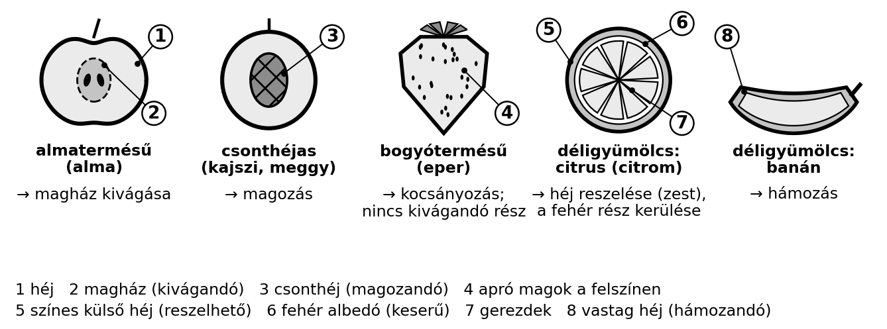

Miközben egy cukrászda reggeli termelését készíted elő, a pulton egyszerre jelenik meg egy láda friss, illatos eper, egy rekesz kissé túlérett sárgabarack és egy karton déligyümölcs. A gyümölcsök nem csupán díszek vagy betétek: mindegyik más víz-, cukor-, sav- és pektintartalommal viselkedik. Ha epres tortazselét készítesz, előfordulhat, hogy a zselé nem dermed, mert az eper pektinben szegény. Ha friss ananászt teszel zselatinos pohárkrémbe, a krém folyós maradhat, mert az ananász enzimje bontja a zselatint. Ha vágott almát túl sokáig állni hagysz, megbarnul. Ebben az alfejezetben a hazai és déli gyümölcsöket, összetételüket, zselésedésüket és biztonságos kezelésüket tanuljuk meg.
A gyümölcs cukrászati alapanyag: lehet friss, fagyasztott, szárított, kandírozott, püré, sűrítmény vagy befőtt. Más arányban kell belőle betenni egy piskótatekercs töltelékébe, egy fagylaltba, egy gyümölcszselébe vagy egy bonbonbetétbe. Ha csak a látványt és az ízt nézed, könnyen úgy járhatsz, hogy a tészta a sok levet eresztő gyümölcstől elázik, a zselé szétfolyik, vagy a krém megsavanyodik.
Képzeld el a következő képet: egy tálcán egymás mellett fekszik egy félbevágott alma, egy marék cseresznye, egy citrom, egy banán, egy szelet ananász és egy mangó. A tálca színes, de mindegyik gyümölcs mögött más és más „viselkedés” áll: az alma és a citrus héja pektinben gazdag, tehát segíti a dermedést; a banán sok cukrot és keményítőt tartalmaz, ezért pürének kiváló; az ananász enzimje megakadályozza a zselatin dermedését. Ezt a belső összetételt kell megtanulnod ahhoz, hogy a gyümölcsöt ne csak felhasználd, hanem irányítani is tudd.
Definíció. A cukrászati élelmiszerismeretben gyümölcsnek nevezzük a növények édes, lédús, jellemzően frissen vagy feldolgozva fogyasztott termését. A gyümölcs lehet friss, hűtött, fagyasztott, szárított, sűrített, kandírozott vagy tartósított.
A hazai és déli gyümölcsöket technológiai szempontból az alábbi csoportokba soroljuk:
| Gyümölcscsoport | Gyakori fajok | Jellemző cukortartalom frissen (g/100 g) | Pektinhatás | Jellemző sav | Cukrászati felhasználás |
|---|---|---|---|---|---|
| Almatermésűek | alma, körte, birs | 9–14 | jó–kiváló | almasav | püré, zselé, töltelék, almatészta, süteménybetét |
| Csonthéjasok | cseresznye, meggy, kajszi, őszibarack, szilva | 8–13 | gyenge–közepes | alma-, citromsav | töltelék, befőtt, püré, díszgyümölcs, fagylalt |
| Bogyótermésűek | eper, málna, szeder, ribiszke, egres, áfonya | 5–12 | változó: ribiszke/egres jó, eper gyenge | citrom-, almasav | gyümölcszselé, coulis, fagylalt, tortazselé, mousse |
| Héjasok (részletesen a 13.2-ben) | dió, mandula, mogyoró, gesztenye | – (dió, mandula, mogyoró: alacsony víztartalom, magas zsír; gesztenye: keményítőben gazdag, zsírszegény) | nem jellemző | nem jellemző | marcipán, nugát, grillázs, töltelék, beütés |
| Déligyümölcsök | narancs, citrom, lime, grapefruit, banán, ananász, mangó, kivi, maracuja | 8–20 | citrus héjában jó | citromsav, aszkorbinsav | coulis, zselé, mousse, ganache, díszítés, püré |
A táblázat számai jellemző, kerekített tápanyagtáblázati értékek; a mindenkori pontos adatokat tápanyagtáblázatból vagy gyártói adatlapról kell ellenőrizni. A héjas gyümölcsök részletes ismertetését a(z) Olajos magvak, gesztenye és mák; zöldségek és gombák alfejezet tartalmazza.

Az ábra a táblázat csoportjainak alaktani alapját mutatja: az almatermésűeknél a héj (1) és a hús alatt a magház (2) van, ezt kivágjuk; a csonthéjasoknál a csonthéjat (3) magozással távolítjuk el; a bogyótermésű eper apró magjai a felszínen ülnek (4), kivágandó rész nincs; a citrusnál a színes külső héj (5) reszelhető, alatta a keserű fehér albedó (6), belül a gerezdek (7); a banán vastag héját (8) hámozzuk. A héjas gyümölcsök (dió, mandula, mogyoró, gesztenye) ábrája a hivatkozott olajosmag-alfejezetben szerepel.
A gyümölcs nagy része víz, jellemzően 75–95 tömegszázalék. Ezért friss gyümölcsből párolgással, aszalással vagy fagyasztva szárítással jelentős tömegcsökkenés érhető el. A víz mellett a technológia szempontjából öt alkotócsoport fontos:
A cukrászati gyümölcszselékben a dermedés általában nem zselatinnal, hanem pektinnel vagy más zselésítővel történik. A hagyományos, magas metoxiltartalmú pektin akkor ad erős gélt, ha három feltétel egyszerre teljesül:
Szabály. A magas metoxiltartalmú pektin zselésedéséhez megközelítőleg:
szükséges. A pontos mennyiségek a gyümölcs fajtájától, érettségétől és a gyártói pektin adatlapjától függenek (ellenőrizendő: gyártói adatlap és Magyar Élelmiszerkönyv irányelvek).
A cukor vízmegkötő hatása csökkenti a rendszerben szabadon mozgó víz mennyiségét. A sav protonálja a pektin láncait, így azok hidrogénkötésekkel összekapcsolódhatnak. Ha kevés a sav, a zselé puha, folyós marad. Ha kevés a cukor, a dermedés szintén gyenge. Ha kevés a pektin, hiába van sok cukor és sav, a gél nem tud kialakulni.
A gyakorlatban ezért:
A későbbi Zselésítő és sűrítő anyagok, mesterséges édesítőszerek alfejezetben megnézzük a pektin típusait és az alacsony cukortartalmú zselésítést is.
A gyümölcsök enzimjei két fontos hibát okozhatnak.
Barnulás. Ha az almát, körtét vagy banánt felvágjuk, a sérült sejtekből polifenol-oxidáz enzim kerül a felületre. Az enzim oxigén jelenlétében barna vegyületekké alakítja a gyümölcs fenolos anyagait. A barnulást csökkenti:
Zselatinbontás. A friss ananász bromelain, a friss kivi aktinidin nevű fehérjebontó enzimet tartalmaz. Ezek a zselatin fehérjeszálait is elhasítják, ezért a zselatinos pohárkrém, tortazselé vagy mousse folyós marad. Az enzimek hőkezeléssel inaktiválhatók. Ha tehát friss ananászból vagy kiviből készítesz zselatinos desszertet, a gyümölcsöt előbb rövid ideig, például 80–95 °C-on néhány percig hőkezeld, vagy használj pasztőrözött pürét (ellenőrizendő: konkrét hőfok–idő a gyártói püré adatlapja szerint). Más zselésítő, például agar-agar vagy pektin, nem érzékeny erre az enzimre.
A hazai gyümölcsök szezonja a következőképp alakul:
A déligyümölcsök (citrusfélék, banán, ananász, mangó, kivi, maracuja) az év nagy részében kaphatók, de minőségük és érettségük szállítmányonként változik.
Tárolási alapszabályok. A bogyós gyümölcsök hűtve, rövid ideig tárolhatók; az alma hűvös, párás tárolóban sokáig eltartható; a banán hűtőbe nem való, mert hidegkárosodást szenvedhet (ellenőrizendő: gyümölcsfajonkénti tárolási hőmérséklet és páratartalom). Az alma és a banán etilént termel, ami más gyümölcsök érését, romlását gyorsíthatja, ezért lehetőleg ne tárold őket érzékeny bogyósokkal közvetlenül együtt.
Higiénia. Friss gyümölcsöt csak felhasználás előtt, folyóvízben mosva dolgozz fel, mert felületén talaj, por, növényvédő szer maradék és mikrobák lehetnek. A mosatlan gyümölcsről a szennyeződés átkerülhet a vágódeszkára, a krémbe és a hideg desszertbe. A felvágott, pürésített gyümölcs nagyobb felületen érintkezik a levegővel, ezért gyorsabban romlik.
Definíció. Szárított gyümölcsnek nevezzük azt a gyümölcsöt, amelyből a víz nagy részét elpárologtatással vagy más vízelvonással eltávolítják. A víztartalom csökkenése miatt a szárított gyümölcs cukor-, sav- és rosttartalma koncentráltabb lesz.
Gyakori szárított gyümölcsök: mazsola, aszalt szilva, aszalt sárgabarack, füge, datolya, vörösáfonya, áfonya, alma. A cukrászatban gyümölcskenyérbe, töltelékbe, bonbonba, müzliszeletbe és teasüteménybe kerülnek. Tárolásuk hűvös, száraz, fénytől védett helyen történjen; a túl nedves környezet penészedést okoz.
Definíció. Kandírozott vagy cukrozott gyümölcsnek nevezzük a feldarabolt gyümölcsöt vagy gyümölcshéjat, amelyet fokozatosan növekvő cukortartalmú szirupban telítenek, majd szárítanak. Ilyen például a kandírozott narancshéj, citronát, cseresznye és ananász. A kandírozott gyümölcsök elsősorban gyümölcskenyérbe, koszorúba, püspökkenyérbe, bonbonbetétbe és díszítő elemként kerülnek.
Jogszabály. Egyes szárított gyümölcsök, például a kénezett aszalt sárgabarack szulfitot (kén-dioxidot) tartalmazhat. A szulfit a 14 jelölendő allergéncsoport egyike, ezért ha a cukrászati termékben a jelölési határt elérő mennyiségben van jelen, azt a fogyasztói tájékoztatásban fel kell tüntetni. A pontos határértéket a hatályos 1169/2011/EU rendelet II. melléklete és az allergén-útmutatók tartalmazzák (ellenőrizendő).
A gyümölcsfeldolgozásban gyakran kell veszteséget, vízelvonást és sziruptöményítést számolni.
Példa. Egy tortához 1 200 g tisztított epret kell előkészíteni. A friss eper válogatási, kocsányozási vesztesége 12%. Mennyi nyers epret vegyünk?
A bruttó tömeg és a tisztítási veszteség összefüggése:
ahol a veszteség tizedestörtben, .
Tehát körülbelül 1,36 kg nyers epret kell beszereznünk.
Példa. 5,0 kg friss szilva víztartalma 80%, az aszalt szilva víztartalma 25%. Mennyi aszalt szilva lesz a szárítás végén?
Először a szárazanyagot számoljuk, mert az a szárítás során nem vész el:
Az aszalt szilva szárazanyag-tartalma , vagyis 75%. Az aszalt tömeg:
Az 5 kg friss szilvából tehát körülbelül 1,33 kg aszalt szilva marad, a többi tömeg eltávozó víz.
Az ábra bal oldala a pektin–sav–cukor hármas szabályát mutatja: a magas metoxiltartalmú pektin csak akkor zselésedik, ha a cukortartalom 60–65 %, a pH 3,0–3,5 és a pektin 0,5–1,5 % egyszerre teljesül (tájékoztató értékek). A jobb oldali oszlopok a szilvás példát mutatják: az 1,0 kg szárazanyag változatlan, a víz 4,0 kg-ról 0,33 kg-ra csökken. A HTML-kiadás kalkulátorában a friss tömeg, a kezdeti és a végső víztartalom állítható; például 3,0 kg, 80 % és 25 % esetén 0,80 kg aszalt gyümölcs marad.
A friss gyümölcs átvételekor érzékszervi és tömegellenőrzést végzünk:
A feldolgozott gyümölcspürénél a szín, illat, íz mellett refraktométerrel a cukortartalmat (°Brix), pH-mérővel vagy indikátorral a savasságot is ellenőrizhetjük. A zselé minőségét kis adagú dermedési próbával vizsgáljuk: hideg tányérra cseppentve rövid idő alatt meg kell szilárdulnia.
Tünet: a gyümölcszselé folyós marad.
Ok: kevés pektin, elégtelen sav, alacsony cukortartalom
vagy nem megfelelő főzés.
Megelőzés/javítás: pektinben gazdag gyümölcs
hozzákeverése vagy pektinpótlás; sav és cukor beállítása mérés után; új
főzés a megfelelő szárazanyagra.
Tünet: a friss ananászból vagy kiviből készült
zselatinos krém nem dermed.
Ok: a bromelain vagy aktinidin enzim a zselatin
fehérjéjét elbontja.
Megelőzés/javítás: hőkezelt vagy pasztőrözött
gyümölcspüré használata, vagy zselatin helyett agar-agar, pektin
alkalmazása.
Tünet: a vágott alma, körte vagy banán gyorsan
megbarnul.
Ok: polifenol-oxidáz enzim és oxigén jelenléte.
Megelőzés: azonnali feldolgozás, citromlé, savas
kezelés, hőkezelés, lefedés.
Tünet: a friss gyümölcsös tészta sütés közben
elázik, a töltelék kifolyik.
Ok: a gyümölcsből sok víz szabadul fel, és a
pektin-sav-cukor egyensúly nem tartja össze.
Megelőzés: lecsöpögtetés, sűrű gyümölcskészítmény
használata, keményítő vagy pektin hozzáadása.
Egy cukrászda esküvői rendelésre 40 szeletes erdei gyümölcsös tortát készít. A tortatetőre eperből és ribiszkéből készült gyümölcszselé kerül. A tanuló csak epret használna, mert az illatosabb, de a mester szerint az eper önmagában gyenge pektintartalmú, ezért a zselé folyós marad. Kétharmad rész eperhez egyharmad rész ribiszkepürét kevernek, a cukrot 62 tömegszázalékra állítják, és citromlével igazítják a savasságot. A próbafőzet hideg tányéron megdermed, ezután viszik fel a tortára. A tanuló rögzíti a naplóban a pürék tömegét, a mért Brix-értéket és a dermedési próba eredményét. A termék stabil, szeletelhető marad, és a vendégek elégedettek.
Ugyanebben a műszakban egy másik tanuló friss ananászos zselatinos poharat készít. A pohárkrém nem dermed, mert a friss ananászt hidegen keverték a zselatinhoz. A tételt nem hozzák forgalomba, mert állaga nem megfelelő. A következő tételnél pasztőrözött mangó-ananász pürét használnak, és a dermedés megfelelő lesz.
1. feladat (A). Sorold fel a táblázat gyümölcscsoportjait (a héjasok kivételével négy csoport), és mindegyikhez írj legalább két példát, valamint egy cukrászati felhasználást.
2. feladat (A). 800 g tisztított sárgabarackra van szükséged. A friss gyümölcs tisztítási vesztesége 10%. Mennyi nyers sárgabarackot vásárolj?
3. feladat (B). 4,0 kg friss málna víztartalma 85%, a fagyasztva szárított málna maradék víztartalma 4%. Számítsd ki, mennyi szárított málna képződik.
4. feladat (B). 2,0 kg gyümölcstöltelék-alapot szeretnél keverni. A kész massza cukortartalma 55% legyen. A gyümölcspép cukortartalma 12%. Mennyi gyümölcspépre és mennyi kristálycukorra van szükség?
5. feladat (C). Vendégpanasz érkezik: a friss ananászos zselatinos desszert folyós volt. Elemezd a hibát, és javasolj két megoldást.
6. feladat (D). Válassz ki 1 kg friss bogyós gyümölcsöt, például epret. Válogasd át, mosd meg, készíts belőle pürét, mérd meg a nettó tömeget, és készíts egy kisméretű dermedési próbát pektinnel, cukorral és citromlével. Vezesd a technológiai naplót.
Önellenőrzés – válaszok
1. feladat. Almatermésűek: alma, körte; például almatöltelék. Csonthéjasok: cseresznye, kajszi; például befőtt, töltelék. Bogyótermésűek: eper, ribiszke; például gyümölcszselé. Déligyümölcsök: narancs, banán; például coulis, mousse.
2. feladat.
Adott:
,
.
Keresett:
.
Körülbelül 890 g nyers sárgabarackra van szükség.
3. feladat.
Szárazanyag frissen:
.
A szárított málna szárazanyag-tartalma:
.
A várt tömeg körülbelül 625 g.
4. feladat.
Legyen
a hozzáadott cukor,
a gyümölcspép tömege grammban.
Tömegmérleg:
.
Cukormérleg:
.
Behelyettesítve :
Tehát körülbelül 977 g kristálycukor és 1 023 g gyümölcspép kell.
5. feladat. Tünet: folyós zselatinos desszert. Ok: a friss ananász bromelain enzimje elbontotta a zselatin fehérjeszálait. Megoldások: hőkezelt vagy pasztőrözött ananászpüré használata; zselatin helyett pektin vagy agar-agar alkalmazása. A hibás tételt nem hozzuk forgalomba.
6. feladat. Értékelési szempontok: higiénikus munkakezdés, tisztítási veszteség mérése és számítása, a püré állaga, a dermedési próba értékelése, a napló adatainak pontossága. Várt eredmény: a gyümölcs nettó tömege a kiindulási tömegnél a válogatási veszteséggel csökkent, a püré homogén, a kisminta a sav- és cukorbeállítás után megdermed.
A gyümölcs a cukrászatban elsősorban víz, cukor, sav, pektin, rost és enzimek keveréke. A hazai gyümölcsöket almatermésűekre, csonthéjasokra és bogyótermésűekre, a héjasokat (részletesen a 13.2-ben) külön csoportként, a délieket citrusokra, banánra, ananászra, mangóra, kivire és maracujára osztjuk. A pektin–sav–cukor hármas a gyümölcszselék alapja: a magas metoxiltartalmú pektin megközelítőleg 60–65% cukor, 3,0–3,5 pH és 0,5–1,5% pektin mellett képez gélt (ellenőrizendő: gyártói pektin adatlap). Az eper és az őszibarack pektinben szegény, ezért gyakran ribiszke- vagy almapürével keverjük. A friss ananász bromelain, a kivi aktinidin enzimje bontja a zselatint, ezért zselatinos készítményekhez csak hőkezelt pürét használunk. A vágott alma barnulását polifenol-oxidáz okozza, savval vagy hőkezeléssel gátolható. A szárított gyümölcs koncentráltabb, a kandírozott gyümölcs cukorsziruppal telített. A kénezett szárított gyümölcs szulfitot tartalmazhat, ami allergénjelölést igényel.
Továbbvitt eredmény. A pektin–sav–cukor hármast és az enzimes zselatinbontást használjuk a Gyümölcstöltelékek, olajos magvas és tartós töltelékek alfejezetben, a gyümölcstartósítás során a Gyümölcsök előkészítése, gyorsfagyasztás és vízelvonás alfejezetben, valamint a zselésítő kiválasztásakor a Zselésítő és sűrítő anyagok, mesterséges édesítőszerek alfejezetben. A héjas gyümölcsök részletes tárgyalása a(z) Olajos magvak, gesztenye és mák; zöldségek és gombák alfejezetben következik, az alkoholos tartósítás pedig a(z) Italok: bor, sör, szeszes italok, párlatok és alkoholmentes italok és a Gyümölcsök előkészítése, gyorsfagyasztás és vízelvonás alfejezetekben.